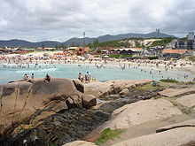

A Praia da Joaquina

A Praia da Joaquina é uma praia oceânica da cidade brasileira de Florianópolis, ao leste da ilha de Santa
Catarina, ao sul. A denominação da praia é recente, aparecendo pela primeira vez em mapas a partir de 1975. Até
então, era chamada de Praia do Campeche. A Praia da Joaquina pertence ao Distrito da Lagoa da Conceição e dista
quinze km do Centro da Cidade de Florianópolis na direção nordeste. Possui três mil metros de extensão e sua
largura varia de oito a setenta metros, tendo seus limites entre a Ponta do Retiro e Praia do Campeche. Ao redor
de toda a praia está localizado o Parque Natural Municipal das Dunas da Lagoa da Conceição, uma importante área
protegida da cidade.
Joaquina é um dos lugares mais procurados por surfistas e esportistas em geral, devido à qualidade das ondas. Todos os
dias há partidas de futebol na areia, futvôlei, corredores, etc. Além de contar com boa estrutura para banhistas, com
sanitários, chuveiros, posto policial, salva-vidas, iluminação noturna, etc.
Próxima à Praia da Joaquina, se localizam as famosas Dunas da Joaquina, onde é possível praticar o "surfe sobre as
dunas" ou sandboard, uma variação do surfe tradicional e que acontece sobre as grandes e belas dunas que contornam a
praia.